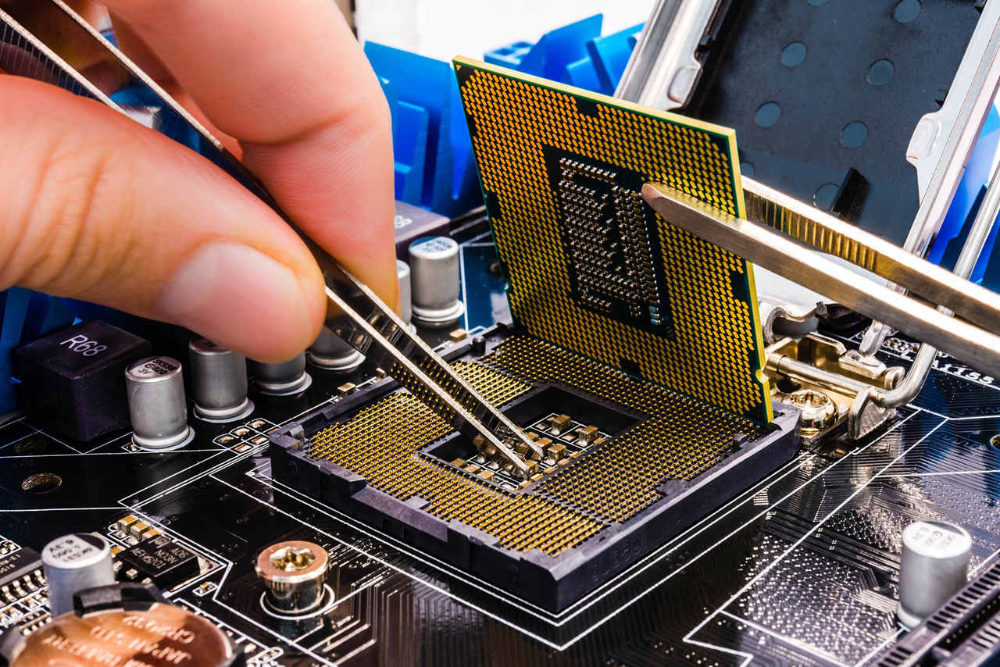

Perfil
Sobre a carreira
A carreira em Engenharia da Computação O profissional formado em Engenharia da Computação é capaz de projetar e construir hardware e software. O hardware consiste na parte física do computador, suas estruturas e componentes e seus periféricos (como teclado, mouse e monitor). Nessa área, o engenheiro de computação faz a integração de circuitos eletrônicos da máquina e desenvolve placas de ligação entre o equipamento e seus acessórios.
desenvolvimento de software o engenheiro da computação cria programas de computadores e aplicativos para os mais diversos fins. Outra área em que um engenheiro da computação pode atuar é o campo da automação industrial e robótica. Ele desenvolve robôs e sistemas digitais para fábricas e indústrias. Também é comum este profissional atuar no suporte e gerenciamento de redes de computadores em empresas de grande porte.

O engenheiro de computação projeta soluções em tecnologia da informação, identificando problemas e oportunidades. Ele cria protótipos, valida novas tecnologias e projeta aplicativos em linguagem de baixo, médio e alto nível.
O profissional da Engenharia de Computação também implementa soluções em tecnologia da informação, gerencia ambientes operacionais, elabora documentação, fornece suporte técnico e organiza treinamentos a usuários.
A carreira em Engenharia de Computação oferece boas perspectivas, pois é uma área que continua aquecida mesmo com o país em crise. Há elevada demanda por profissionais qualificados, especialmente na área de big data e desenvolvimento de aplicativos.
O profissional também encontra um bom mercado para atuar em campos como automação industrial e robótica, fabricação de hardware, suporte até mesmo em marketing e vendas, para a comercialização de equipamentos de alta tecnologia.
Requisitos
Um bom engenheiro da computação deve ter afinidade com Matemática, gostar de tecnologia e linguagens de programação.
Como qualquer profissional da área de tecnologia, este engenheiro precisa acompanhar os avanços científicos e tecnológicos da área em que atua. Estar atualizado sobre as novidades é essencial para se manter competitivo no mercado de trabalho.